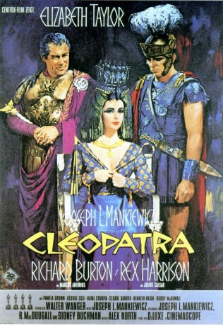
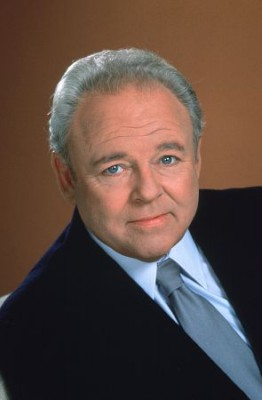
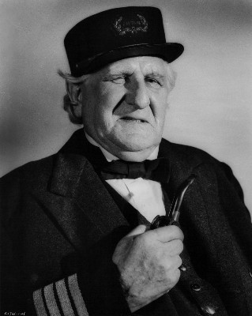
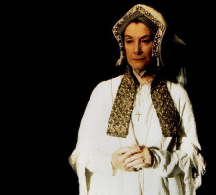
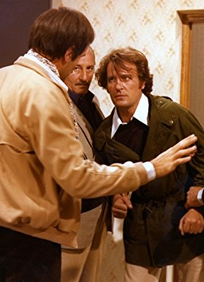

#852 Cleopatra
Auszeichnungen: 4 Oscars gewonnen für 5 Oscars nominiert
 
 IMDB-Wertung: 7.0 / 10
IMDB-Wertung: 7.0 / 10  Metascore: 60
Metascore: 60 
Cleopatra (Elizabeth Taylor) herrscht über das ägyptische Königreich, doch ihre Macht ist bedroht. Sie hofft, ihre Position durch Verbindung in das römische Reich zu stärken. Tatsächlich verliebt sich der römische Imperator Julius Cäsar (Rex Harrison) in sie und sie gebärt ihm einen Sohn. Doch ehe sie ihren Platz an seiner Seite einnehmen kann, wird Cäsar ermordet und die Königin muß zurück nach Ägypten fliehen. Dessen General und Gefolgsmann Marc Anthon (Richard Burton) folgt ihr und sie beginnen eine Affäre. Doch Cäsars Nachfolger Octavian will das ägyptische Reich dem römischen einverleiben und setzt den beiden nach...
Jahr: 1963
Dauer: 192 Minuten
FSK: 12
Land: England Studio: 20th Century FoxTonspuren: DTS - ,
Untertitel: Deutsch,
Auflösung: 1080p (1920x872) Größe: 19558 MB
Genre: Biographie, Drama, Geschichte, Liebe
Regisseur: Joseph L. Mankiewicz
Drehbuch: Joseph L. Mankiewicz, Ranald MacDougall, Sidney Buchman, Plutarch, Suetonius
Soundtrack: Alex North
Darsteller:
 Elizabeth Taylor als Cleopatra
Elizabeth Taylor als Cleopatra Richard Burton als Mark Antony
Richard Burton als Mark Antony- Rex Harrison als Julius Caesar
 Hume Cronyn als Sosigenes
Hume Cronyn als Sosigenes- Cesare Danova als Apollodorus
- Andrew Keir als Agrippa
 Martin Landau als Rufio
Martin Landau als Rufio Roddy McDowall als Octavian - Caesar Augustus
Roddy McDowall als Octavian - Caesar Augustus Robert Stephens als Germanicus
Robert Stephens als Germanicus Francesca Annis als Eiras
Francesca Annis als Eiras- Grégoire Aslan als Pothinus
- John Doucette als Achillas
 Michael Hordern als Cicero
Michael Hordern als Cicero- John Hoyt als Cassius
 Marne Maitland als Euphranor
Marne Maitland als Euphranor-  Carroll O'Connor als Casca
- John Alderton als 1st Officer , uncredited
-  Finlay Currie als Titus , uncredited
 Jeremy Kemp als Agitator , uncredited
Jeremy Kemp als Agitator , uncredited Desmond Llewelyn als Senator , uncredited
Desmond Llewelyn als Senator , uncredited- Calvin Lockhart als Minor Role , uncredited
- Loris Loddi als Caesarion at Age 4 , uncredited
-  Jean Marsh als Octavia , uncredited
- Paola Pitagora als Cleopatra's Servant , uncredited
- Pamela Brown als High Priestess
- George Cole als Flavius
- Kenneth Haigh als Brutus
 Martin Benson als Ramos
Martin Benson als Ramos- Herbert Berghof als Theodotos
- John Cairney als Phoebus
- Jacqueline Chan als Lotos
- Isabel Cooley als Charmian
- Andrew Faulds als Canidius
- Michael Gwynn als Cimber
- Richard O'Sullivan als Pharaoh Ptolemy XIII
- Gwen Watford als Calpurnia
 Douglas Wilmer als Decimus
Douglas Wilmer als Decimus- John Alderson als Roman Officer , uncredited
- Ronald Allen als Minor Role , uncredited
- Audrey Anderson als Minor Role , uncredited
- María Badmajew als Minor Role , uncredited
- Michèle Bailly als Minor Role , uncredited
- Marina Berti als Queen at Tarsus , uncredited
-  Salvatore Billa als Egyptian Slave / Centurion , uncredited
 Omero Capanna als Trombonist , uncredited
Omero Capanna als Trombonist , uncredited- Bruna Caruso als Minor Role , uncredited
- Rod Dana als One of Caesar's Entourage , uncredited
- Marie Devereux als Bacchanal Reveler , uncredited
- Peter Forster als 2nd Officer , uncredited
- John Frederick als Captain Palace Guard , uncredited
Datei: X:\1963\Cleopatra (1963, FSK12, 1920x872).mkv seit 31.03.2015
Festplatte: HD 1900-1970
 Es gibt insgesamt 23 Filme in der Gruppe '1963'
Es gibt insgesamt 23 Filme in der Gruppe '1963'